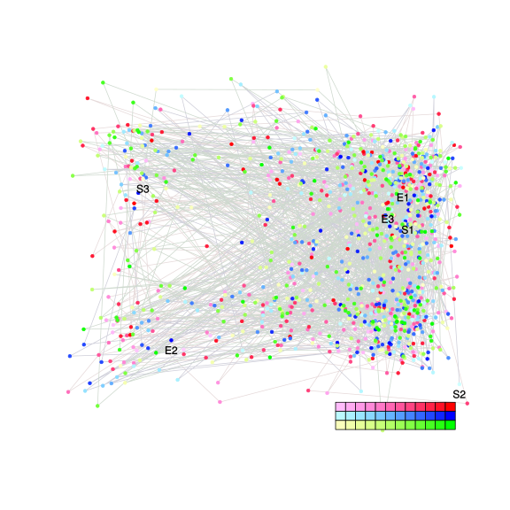
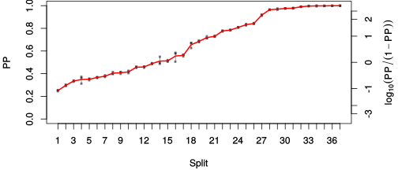
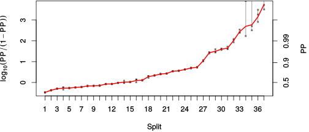

| chain # | burnin | subsample | Iterations (remaining) | command line | subdirectory | directory |
|---|---|---|---|---|---|---|
| 1 | 10000 | 1 | 90000 | /usr/local/bali-phy-3.0-beta2/bin/bali-phy E6_AA_red3_v2_selAll_all4Manatees.fas -s 55631 -n E6_red3_v2_selAll_all4Manatees_c1 | E6_red3_v2_selAll_all4Manatees_c1-1 | /home/willemse/data/trees/BaliPhy/E6/red3_v2 |
| 2 | 10000 | 1 | 90000 | /usr/local/bali-phy-3.0-beta2/bin/bali-phy E6_AA_red3_v2_selAll_all4Manatees.fas -s 63213 -n E6_red3_v2_selAll_all4Manatees_c2 | E6_red3_v2_selAll_all4Manatees_c2-1 | /home/willemse/data/trees/BaliPhy/E6/red3_v2 |
| 3 | 10000 | 1 | 90000 | /usr/local/bali-phy-3.0-beta2/bin/bali-phy E6_AA_red3_v2_selAll_all4Manatees.fas -s 20432 -n E6_red3_v2_selAll_all4Manatees_c3 | E6_red3_v2_selAll_all4Manatees_c3-1 | /home/willemse/data/trees/BaliPhy/E6/red3_v2 |
| P(data|M) = -10847.336 +- 0.550 | Complete sample: 246108 topologies | 95% Bayesian credible interval: 232635 topologies |
Phylogeny Distribution

| Partition support: Summary |
| Partition support graph: SVG |
{kind=link}
| 50% consensus | Newick (+PP) | SVG | |||||
| 66% consensus | Newick (+PP) | SVG | |||||
| 80% consensus | Newick (+PP) | SVG | |||||
| 90% consensus | Newick (+PP) | SVG | |||||
| 95% consensus | Newick (+PP) | SVG | |||||
| 99% consensus | Newick (+PP) | SVG | |||||
| 100% consensus | Newick (+PP) | SVG | |||||
| MAP | Newick (+PP) | SVG | |||||
| greedy | Newick (+PP) | SVG |
{kind=link}
{kind=link}
{kind=link}
{kind=link}
{kind=link}
{kind=link}
{kind=link}
{kind=link}
Alignment Distribution
Partition 1
| Diff | Min. %identity | # Sites | Constant | Informative | ||||
|---|---|---|---|---|---|---|---|---|
| Initial | FASTA | HTML | Diff | 0.578% | 238 | 1 (0.42%) | 216 (90.8%) | |
| Best (WPD) | FASTA | HTML | AU | 2.26% | 663 | 6 (0.905%) | 182 (27.5%) |
Mixing
{kind=link}
{kind=link}
| burnin (scalar) | ESS (scalar) | ESS (partition) | ASDSF | MSDSF | PSRF-CI80% | PSRF-RCF |
|---|---|---|---|---|---|---|
| 1171 | 1097 | 1086.126 | 0.008 | 0.044 | 1.001 | 1.036 |
Projection of RF distances for the first 3 chains3D | Variation of split PPs across chains |
Scalar variables
| Statistic | Median | 95% BCI | ACT | ESS | burnin | PSRF-CI80% | PSRF-RCF |
|---|---|---|---|---|---|---|---|
| prior | -499.4 | (-557.6, -444.9) | 182.9 | 1476 | 402 | 0.9996 | 0.9999 |
| prior_A1 | -635.9 | (-692.4, -586.4) | 158.5 | 1703 | 810 | 1.001 | 0.9999 |
| likelihood | -1.081e+04 | (-1.085e+04, -1.078e+04) | 124.9 | 2161 | 916 | 1.001 | 1.004 |
| logp | -1.131e+04 | (-1.136e+04, -1.127e+04) | 77.68 | 3475 | 790 | 1.001 | 1.001 |
| Heat.beta | 1 | ||||||
| Scale1 | 21.04 | (15.68, 27.25) | 1.033 | 261375 | 50 | 1 | 1.001 |
| S1.F.pi.A | 0.06388 | (0.0552, 0.07301) | 8.585 | 31450 | 329 | 1 | 0.9963 |
| S1.F.pi.R | 0.07696 | (0.06714, 0.08748) | 9.087 | 29712 | 161 | 0.9997 | 0.9958 |
| S1.F.pi.N | 0.03137 | (0.02551, 0.03745) | 8.419 | 32071 | 402 | 1 | 0.997 |
| S1.F.pi.D | 0.04417 | (0.03689, 0.05214) | 9.992 | 27022 | 305 | 1 | 1.007 |
| S1.F.pi.C | 0.05908 | (0.0489, 0.06969) | 8.386 | 32198 | 324 | 1 | 1.004 |
| S1.F.pi.Q | 0.03357 | (0.02789, 0.03931) | 8.356 | 32312 | 281 | 0.9997 | 1.002 |
| S1.F.pi.E | 0.05315 | (0.04485, 0.06174) | 8.816 | 30627 | 504 | 1 | 1.004 |
| S1.F.pi.G | 0.06678 | (0.05589, 0.07811) | 9.326 | 28950 | 422 | 1.001 | 1.01 |
| S1.F.pi.H | 0.02449 | (0.01917, 0.03028) | 8.498 | 31772 | 248 | 0.9997 | 0.9994 |
| S1.F.pi.I | 0.04793 | (0.04051, 0.05567) | 9.033 | 29889 | 515 | 1 | 0.9965 |
| S1.F.pi.L | 0.1184 | (0.1053, 0.132) | 8.766 | 30800 | 255 | 1 | 1.005 |
| S1.F.pi.K | 0.04219 | (0.03551, 0.04946) | 8.927 | 30245 | 228 | 1 | 1.009 |
| S1.F.pi.M | 0.00926 | (0.006301, 0.01251) | 7.99 | 33790 | 343 | 1.001 | 1.001 |
| S1.F.pi.F | 0.04667 | (0.03851, 0.0551) | 8.549 | 31582 | 200 | 1 | 0.9979 |
| S1.F.pi.P | 0.04363 | (0.03527, 0.05239) | 10.38 | 26001 | 586 | 0.9992 | 0.999 |
| S1.F.pi.S | 0.05693 | (0.04926, 0.06507) | 8.053 | 33526 | 196 | 1 | 1.003 |
| S1.F.pi.T | 0.05037 | (0.04287, 0.05845) | 8.237 | 32779 | 186 | 0.9998 | 1.002 |
| S1.F.pi.W | 0.02446 | (0.01836, 0.03115) | 9.693 | 27854 | 707 | 1 | 1.001 |
| S1.F.pi.Y | 0.05214 | (0.0436, 0.06113) | 8.045 | 33561 | 212 | 1 | 1.009 |
| S1.F.pi.V | 0.05248 | (0.04443, 0.06079) | 9.864 | 27372 | 329 | 1 | 1.002 |
| I1.RS07.meanIndelLengthMinus1 | 10.09 | (7.357, 13.31) | 21.21 | 12728 | 307 | 1 | 1.003 |
| I1.RS07.logLambda | -4.532 | (-4.814, -4.249) | 13.89 | 19435 | 131 | 1 | 1.001 |
| |A1| | 634 | (593, 683) | 246.1 | 1096 | 596 | 0.9779 | 1.036 |
| #indels1 | 71 | (64, 78) | 151 | 1788 | 539 | 0.9 | 0.9989 |
| |indels1| | 684 | (612, 770) | 123.1 | 2193 | 670 | 0.9936 | 1.001 |
| #substs1 | 2071 | (2029, 2106) | 161.9 | 1668 | 1171 | 0.9868 | 1.022 |
| Scale1*|T| | 27.36 | (25.77, 29.06) | 18.11 | 14905 | 350 | 1 | 0.9997 |
| |A| | 634 | (593, 683) | 246.1 | 1096 | 596 | 0.9779 | 1.036 |
| #indels | 71 | (64, 78) | 151 | 1788 | 539 | 0.9 | 0.9989 |
| |indels| | 684 | (612, 770) | 123.1 | 2193 | 670 | 0.9936 | 1.001 |
| #substs | 2071 | (2029, 2106) | 161.9 | 1668 | 1171 | 0.9868 | 1.022 |
| |T| | 1.301 | (0.9699, 1.668) | 1 | 270003 | 84 | 0.9999 | 1.001 |